In this case study, we will fit a simple linear regression model. Later, we will also include one categorical variable into the model and check for interaction. The objective here will be transform data (if necessary), fit the model, analyse it, and write the fitted equations for the two studied groups. To do this, we will a the model, check the assumptions, re-fit it (if necessary), interpret it, visualize the estimated curves, and predict new values based on this fitted model for different classes for the categorical variable.
For this problem, we will analyse data about the mileage per gallon
performances of various cars. The data set was retrieved from this page
(with changes). You can download the .csv file here.
This data set contains the following variables:
mpg (continuous)cylinders (multi-valued discrete)displacement (continuous)horsepower (continuous)weight (continuous)accelaration (continuous)model year (multi-valued discrete)origin (multi-valued discrete)In order to explore the data set and perform initial analyses, we
have to read it (with R) first. Provided that the
.csv file is saved within the datasets/
folder, one can read the file in the following way.
col.names <- c('mpg', 'cylinders', 'displacement', 'hp', 'weight', 'acceleration', 'year', 'origin')
car <- read.csv(file = 'datasets/car.csv', header = FALSE, sep = ',', col.names = col.names)
head(car, 5)## mpg cylinders displacement hp weight acceleration year origin
## 1 18 8 307 130 3504 12.0 70 1
## 2 16 8 304 150 3433 12.0 70 1
## 3 17 8 302 140 3449 10.5 70 1
## 4 NA 8 350 165 4142 11.5 70 1
## 5 NA 8 351 153 4034 11.0 70 1Now, let’s see a summary of our data.
summary(car)## mpg cylinders displacement hp weight
## Min. :12.00 Min. :3.000 Min. : 68.0 Min. : 48.0 Min. :1613
## 1st Qu.:18.00 1st Qu.:4.000 1st Qu.:107.0 1st Qu.: 77.5 1st Qu.:2237
## Median :23.00 Median :4.000 Median :148.5 Median : 92.0 Median :2804
## Mean :23.74 Mean :5.372 Mean :187.9 Mean :100.9 Mean :2936
## 3rd Qu.:29.80 3rd Qu.:6.000 3rd Qu.:250.0 3rd Qu.:113.5 3rd Qu.:3456
## Max. :39.00 Max. :8.000 Max. :400.0 Max. :190.0 Max. :4746
## NA's :6 NA's :2
## acceleration year origin
## Min. : 8.00 Min. :70.00 Min. :1.000
## 1st Qu.:14.00 1st Qu.:73.00 1st Qu.:1.000
## Median :15.50 Median :76.00 Median :1.000
## Mean :15.58 Mean :76.36 Mean :1.558
## 3rd Qu.:17.00 3rd Qu.:79.75 3rd Qu.:2.000
## Max. :23.50 Max. :82.00 Max. :3.000
## As one can see from the above table, some multi-valued discrete
attributes are being interpreted as integer values; also, we have
NA’s for the mpg and horsepower
attributes. To verify (and change) the variable types, we can do the
following
car$cylinders <- as.factor(car$cylinders)
car$year <- as.factor(car$year)
car$origin <- as.factor(car$origin)Also, as there are too many classes for the year, and as
a way to make our analyses simpler, let’s categorize the cars into
old and new, such that cars from before
77 will be labeled as 1 and the remaining cars
will be labeled as 2.
car$year <- as.factor(sapply(X = car$year, FUN = function (item) { ifelse(item %in% 70:76, 1, 2) }))
summary(car)## mpg cylinders displacement hp weight
## Min. :12.00 3: 3 Min. : 68.0 Min. : 48.0 Min. :1613
## 1st Qu.:18.00 4:134 1st Qu.:107.0 1st Qu.: 77.5 1st Qu.:2237
## Median :23.00 5: 1 Median :148.5 Median : 92.0 Median :2804
## Mean :23.74 6: 62 Mean :187.9 Mean :100.9 Mean :2936
## 3rd Qu.:29.80 8: 58 3rd Qu.:250.0 3rd Qu.:113.5 3rd Qu.:3456
## Max. :39.00 Max. :400.0 Max. :190.0 Max. :4746
## NA's :6 NA's :2
## acceleration year origin
## Min. : 8.00 1:132 1:167
## 1st Qu.:14.00 2:126 2: 38
## Median :15.50 3: 53
## Mean :15.58
## 3rd Qu.:17.00
## Max. :23.50
## Now, let’s deal with the missing values. Different approaches could
have been taken here, and they highly depend on your problem (and your
knowledge about the problem). For this particular example, suppose that
we want to describe the mpg data as a function of the
hp and year. Since we do not now much about
this data, a simpler options would be to exclude the instances with
missing values for the hp. Let’s do this.
car2 <- car[!is.na(car$hp), c('mpg', 'hp', 'year')]
summary(car2)## mpg hp year
## Min. :12.00 Min. : 48.0 1:131
## 1st Qu.:18.00 1st Qu.: 77.5 2:125
## Median :23.00 Median : 92.0
## Mean :23.75 Mean :100.9
## 3rd Qu.:29.80 3rd Qu.:113.5
## Max. :39.00 Max. :190.0
## NA's :6Given this smaller data set, our goal might be to predict the missing
values for mpg. However, to do this, we have to have a data
set with no NA’s. Let’s name it car3.
car3 <- car2[!is.na(car2$mpg), ]As a last exploration step, let’s plot our data set.
plot(mpg ~ hp, pch = 19, col = (as.numeric(year) + 1), data = car3)
legend('topright', c('old', 'new'), col = unique(as.numeric(car3$year) + 1), pch = 19)From the previous plot, although we suspect that a linear model might not be appropriate for this data set as it is, let’s fit it and analyse the results.
In particular, we will fit the following model
\[ \texttt{mpg}_i = \beta_0 + \texttt{hp}_i \cdot \beta_1 + \epsilon_i; \text{ such that } \epsilon_i \overset{\text{i.i.d.}}{\sim} \text{Normal}(0, \sigma^2_{\epsilon}) \]
model <- lm(formula = mpg ~ hp, data = car3)
summary(model)##
## Call:
## lm(formula = mpg ~ hp, data = car3)
##
## Residuals:
## Min 1Q Median 3Q Max
## -9.3908 -3.3377 -0.0706 2.7713 11.7533
##
## Coefficients:
## Estimate Std. Error t value Pr(>|t|)
## (Intercept) 42.543005 0.941244 45.20 <2e-16 ***
## hp -0.188003 0.009001 -20.89 <2e-16 ***
## ---
## Signif. codes: 0 '***' 0.001 '**' 0.01 '*' 0.05 '.' 0.1 ' ' 1
##
## Residual standard error: 4.362 on 248 degrees of freedom
## Multiple R-squared: 0.6376, Adjusted R-squared: 0.6361
## F-statistic: 436.2 on 1 and 248 DF, p-value: < 2.2e-16From the above summary, we have strong evidences that both \(\beta_0\) and \(\beta_1\) are different than 0. The residuals do not seem symmetric, though. Also, \(\text{R}^2 =\) 0.6375558. Now, let’s plot the fitted model.
plot(mpg ~ hp, pch = 19, col = (as.numeric(year) + 1), data = car3)
abline(model)
legend('topright', c('old', 'new'), col = unique(as.numeric(car3$year) + 1), pch = 19)However, notice that the relation between hp and
mpg does not seem to be linear, and the age
might also provide information when describe the response variable.
Thus, before taking any conclusions from the fitted model, let’s do an
analysis of residuals. We will focus on the “Residuals vs Fitted” and
“Normal Q-Q” plots.
plot(model, which = c(1, 2))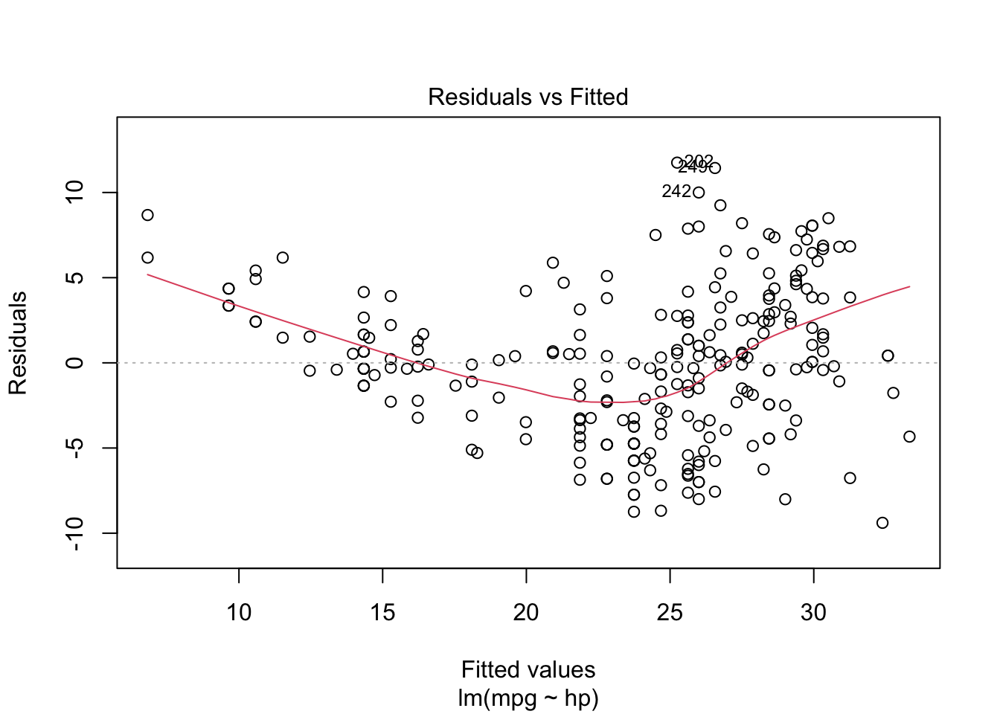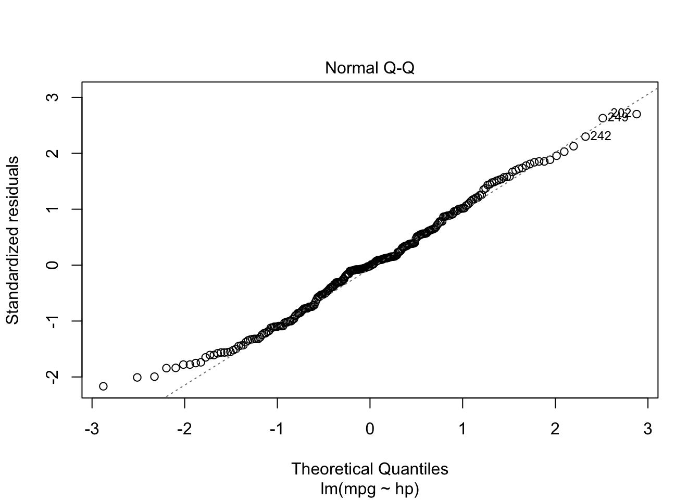
From the “Residuals vs Fitted” plots, we may see that a linear
relationship does not correctly describe how mpg is written
as a function of hp, since we can see a pattern for the
residuals (as opposed to a “well spread and random” cloud of points
around \(y = 0\)). Also, from the
“Normal Q-Q” plot, the residuals seem to be normally distributed (we
will test it).
To confirm these visual analyses, let’s conduct a proper test. To
check for the assumption of equal variance, since we have a quantitative
regressor, we can use the Score Test, available in the car
package through the ncvTest() function. Also, to check for
the normality of the residuals, we will use the Shapiro-Wilk test
(shapiro.test()).
library('car')
ncvTest(model)## Non-constant Variance Score Test
## Variance formula: ~ fitted.values
## Chisquare = 6.945645, Df = 1, p = 0.0084024shapiro.test(resid(model))##
## Shapiro-Wilk normality test
##
## data: resid(model)
## W = 0.98926, p-value = 0.06041As the p-values are too small for the first test, we have strong evidences against equal variance. On the other hand, we fail to reject the hypothesis of normally distributed residuals (with a significance level of \(5\%\)). Thus, as at least one assumption for this model does not hold, the results might not be reliable.
As a way to overcome this issue, we will transform the data according to the following rule
\[ w(\lambda) = \begin{cases} (y^{\lambda} - 1)/\lambda &, \text{ if } \lambda \neq 0 \\ \log(y) &, \text{ if } \lambda = 0. \end{cases} \]
This can be achieved by using the boxCox() function from
the car package. Based on it, we will retrieve the value of
lambda and will apply the above transformation.
bc <- boxCox(model)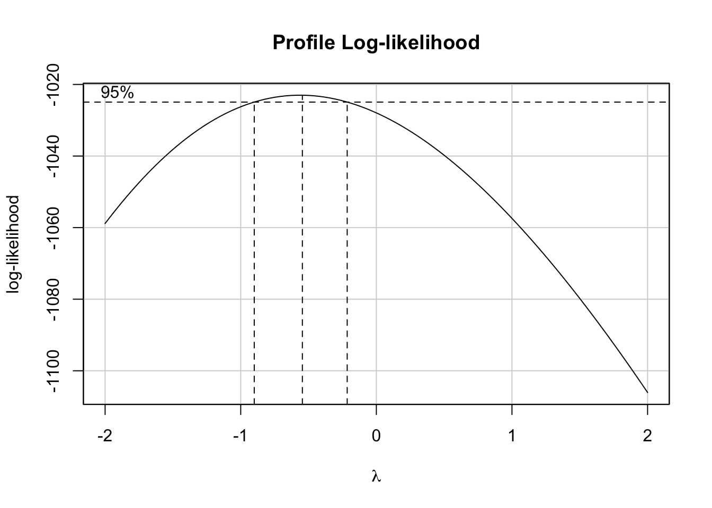
(lambda <- bc$x[which.max(bc$y)])## [1] -0.5454545Now, let’s create a function to transform our data based on the value
of \(\lambda\) and based on the above
rule. We will name it tranfData(). Also, we will create a
function to transform our data back to the original scale. We will name
it tranfData_back(). This second function, if \(\lambda \neq 0\), will be given by \(y(\lambda) = (w\lambda +
1)^{1/\lambda}\).
transfData <- function (data, lambda) { ((data ^ lambda - 1) / lambda) }
transfData_back <- function (data, lambda) { ((data * lambda + 1) ^ (1 / lambda)) }Therefore, we can easily transform our data, given \(\lambda =\) -0.55, in the following way
car3$mpg_transf <- sapply(X = car3$mpg, FUN = transfData, lambda = lambda)
head(car3, 5)## mpg hp year mpg_transf
## 1 18 130 1 1.454413
## 2 16 150 1 1.429271
## 3 17 140 1 1.442414
## 8 14 160 1 1.398742
## 9 24 95 1 1.509442plot(mpg_transf ~ hp, pch = 19, col = (as.numeric(year) + 1), data = car3)
legend('topright', c('old', 'new'), col = unique(as.numeric(car3$year) + 1), pch = 19)Finally, we can fit again a linear model for the transformed data.
model2 <- lm(formula = mpg_transf ~ hp, data = car3)
summary(model2)##
## Call:
## lm(formula = mpg_transf ~ hp, data = car3)
##
## Residuals:
## Min 1Q Median 3Q Max
## -0.079235 -0.021397 0.001967 0.020464 0.074192
##
## Coefficients:
## Estimate Std. Error t value Pr(>|t|)
## (Intercept) 1.656e+00 6.607e-03 250.69 <2e-16 ***
## hp -1.622e-03 6.318e-05 -25.68 <2e-16 ***
## ---
## Signif. codes: 0 '***' 0.001 '**' 0.01 '*' 0.05 '.' 0.1 ' ' 1
##
## Residual standard error: 0.03062 on 248 degrees of freedom
## Multiple R-squared: 0.7267, Adjusted R-squared: 0.7256
## F-statistic: 659.3 on 1 and 248 DF, p-value: < 2.2e-16plot(mpg_transf ~ hp, pch = 19, col = (as.numeric(year) + 1), data = car3)
abline(model2)
legend('topright', c('old', 'new'), col = unique(as.numeric(car3$year) + 1), pch = 19)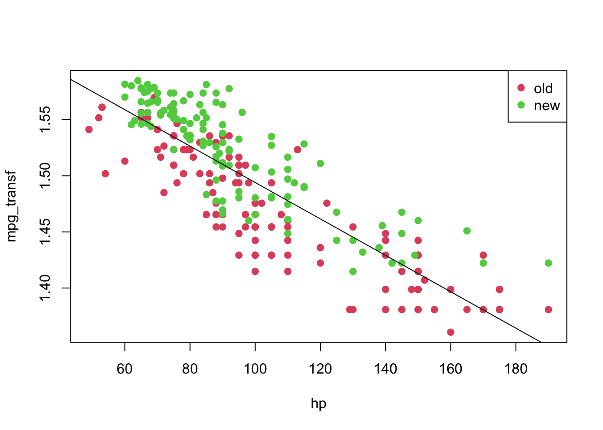
Also, we can analyse the diagnostic plots, as before. As well as conduct the appropriate tests.
plot(model2, which = c(1, 2))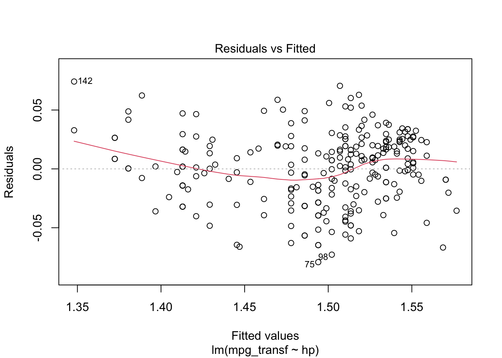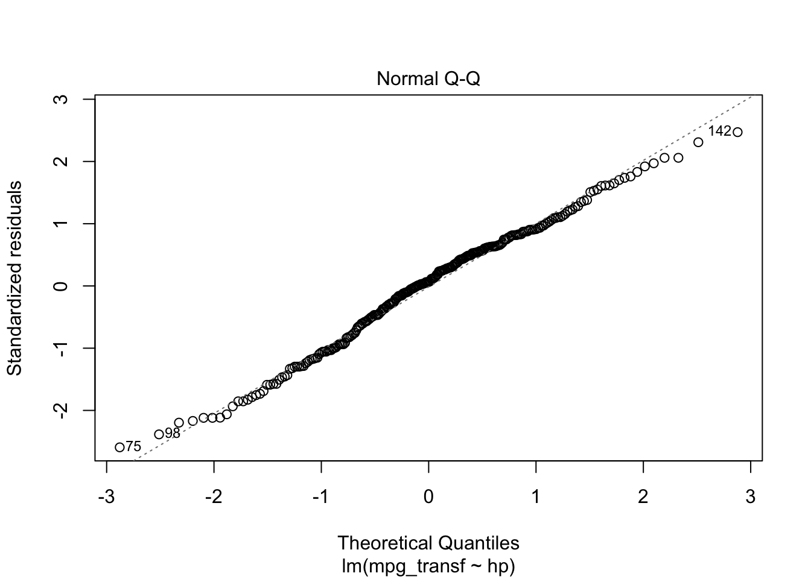
ncvTest(model2)## Non-constant Variance Score Test
## Variance formula: ~ fitted.values
## Chisquare = 1.087962, Df = 1, p = 0.29692shapiro.test(resid(model2))##
## Shapiro-Wilk normality test
##
## data: resid(model2)
## W = 0.98934, p-value = 0.06252As we would expect, the results look much better now. However, we can
still use information about year, which seems to play a
role in explaining the response variable. That being said, let’s fit
this new model.
Notice that we will consider a model with interaction (an interaction occurs when an independent variable has a different effect on the outcome depending on the values of another independent variable). For an extensive discussion on this topic, one can refer to this link.
model3 <- lm(formula = mpg_transf ~ hp * year, data = car3)
summary(model3)##
## Call:
## lm(formula = mpg_transf ~ hp * year, data = car3)
##
## Residuals:
## Min 1Q Median 3Q Max
## -0.061671 -0.017084 0.001801 0.018128 0.065467
##
## Coefficients:
## Estimate Std. Error t value Pr(>|t|)
## (Intercept) 1.620e+00 7.767e-03 208.563 < 2e-16 ***
## hp -1.435e-03 6.886e-05 -20.836 < 2e-16 ***
## year2 4.570e-02 1.159e-02 3.945 0.000104 ***
## hp:year2 -1.118e-04 1.133e-04 -0.986 0.325015
## ---
## Signif. codes: 0 '***' 0.001 '**' 0.01 '*' 0.05 '.' 0.1 ' ' 1
##
## Residual standard error: 0.02561 on 246 degrees of freedom
## Multiple R-squared: 0.8103, Adjusted R-squared: 0.808
## F-statistic: 350.3 on 3 and 246 DF, p-value: < 2.2e-16From the above table, we can see that the interaction
(hp:year2) is not significant; therefore, we can fit a
simpler model.
model4 <- lm(formula = mpg_transf ~ hp + year, data = car3)
coeffi <- model4$coefficients
summary(model4)##
## Call:
## lm(formula = mpg_transf ~ hp + year, data = car3)
##
## Residuals:
## Min 1Q Median 3Q Max
## -0.061994 -0.017143 0.001694 0.017929 0.065681
##
## Coefficients:
## Estimate Std. Error t value Pr(>|t|)
## (Intercept) 1.624e+00 6.323e-03 256.91 <2e-16 ***
## hp -1.476e-03 5.469e-05 -26.99 <2e-16 ***
## year2 3.477e-02 3.353e-03 10.37 <2e-16 ***
## ---
## Signif. codes: 0 '***' 0.001 '**' 0.01 '*' 0.05 '.' 0.1 ' ' 1
##
## Residual standard error: 0.02561 on 247 degrees of freedom
## Multiple R-squared: 0.8096, Adjusted R-squared: 0.808
## F-statistic: 525 on 2 and 247 DF, p-value: < 2.2e-16plot(mpg_transf ~ hp, pch = 19, col = (as.numeric(year) + 1), data = car3)
abline(coeffi[[1]], coeffi[[2]], col = 2)
abline(coeffi[[1]] + coeffi[[3]], coeffi[[2]], col = 3)
legend('topright', c('old', 'new'), col = unique(as.numeric(car3$year) + 1), pch = 19)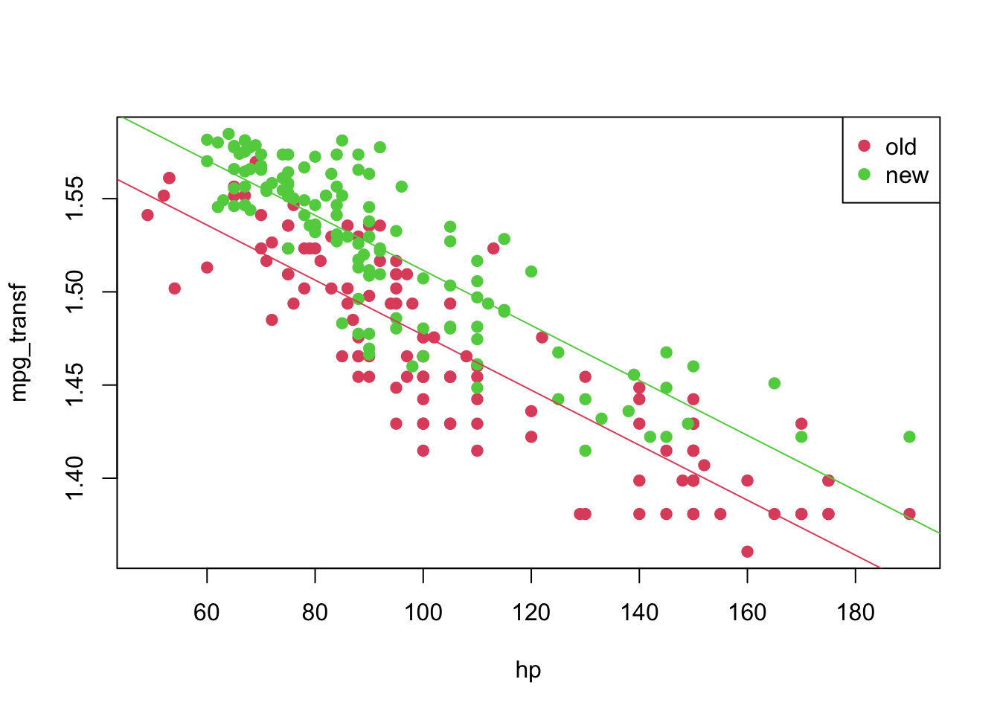
Again, we can analyse the diagnostic plots and conduct the appropriate tests.
plot(model4, which = c(1, 2))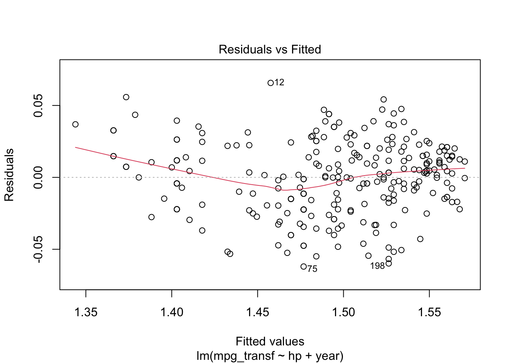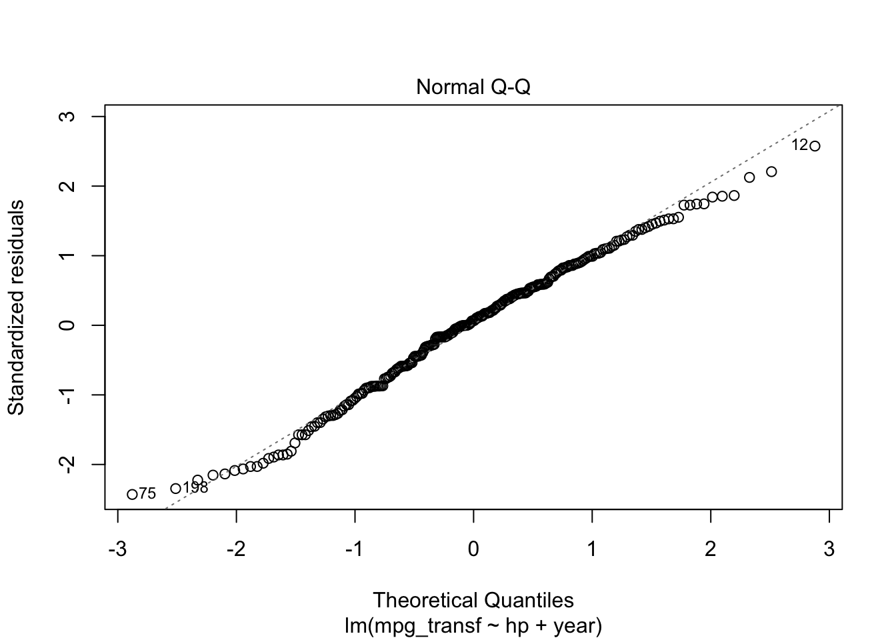
ncvTest(model4)## Non-constant Variance Score Test
## Variance formula: ~ fitted.values
## Chisquare = 2.838162, Df = 1, p = 0.092049shapiro.test(resid(model4))##
## Shapiro-Wilk normality test
##
## data: resid(model4)
## W = 0.99006, p-value = 0.08516Thus, for a significance level of \(5\%\) we fail to reject the hypotheses of equal variance and normality. Meaning that this might be an appropriate model for our data. However, recall that we are modelling a transformed data set. We can get a model for our original data by doing the following. For a transformation \(f\), we have the
\[\begin{align*} \texttt{mpg}_i &= f^{-1}(1.624 -0.001\texttt{hp}_i)&, \text{ if } \texttt{year} = 1 \\ \texttt{mpg}_i &= f^{-1}((1.624 + 0.035) -0.001\texttt{hp}_i)&, \text{ if } \texttt{year} = 2 \end{align*}\]
And we can plot it in the following way
plot(mpg ~ hp, pch = 19, col = (as.numeric(year) + 1), data = car3)
curve(transfData_back(coeffi[[1]] + coeffi[[2]] * x, lambda = lambda), from = 0, to = 250, add = TRUE, col = 2)
curve(transfData_back((coeffi[[1]] + coeffi[[3]]) + coeffi[[2]] * x, lambda = lambda), from = 0, to = 250, add = TRUE, col = 3)
legend('topright', c('old', 'new'), col = unique(as.numeric(car3$year) + 1), pch = 19)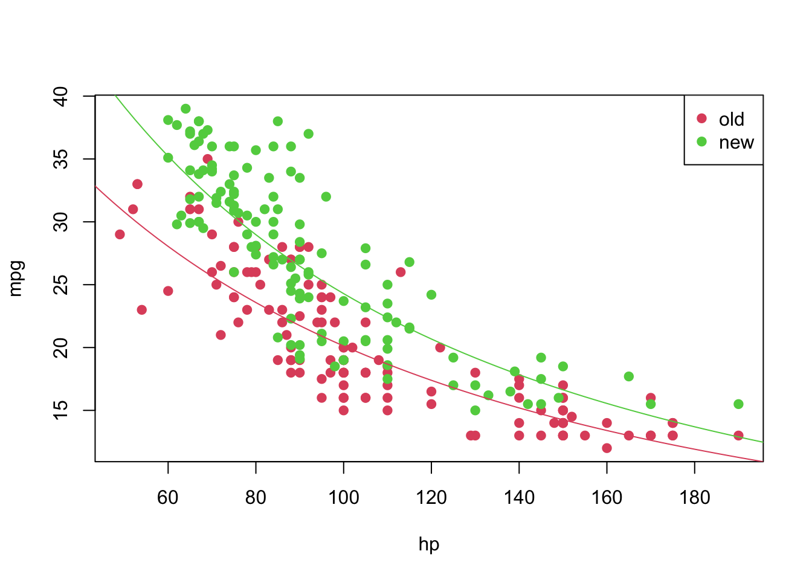
Now that we have a “good” fitted model, we can predict, as suggested
before, the values of mpg for which we had
NA’s before. We can do this in the following way
pos_unk <- which(is.na(car2$mpg))
unknown <- car2[is.na(car2$mpg), ]
(predicted_values <- sapply(X = predict(object = model4, newdata = data.frame(hp = unknown$hp, year = unknown$year)), FUN = transfData_back, lambda = lambda))## 1 2 3 4 5 6
## 13.00153 13.98905 12.25847 12.25847 31.38660 22.37227car2[is.na(car2$mpg), 'mpg'] <- predicted_values
pch <- rep(19, nrow(car2)); pch[pos_unk] <- 9
plot(mpg ~ hp, pch = pch, col = (as.numeric(year) + 1), data = car2)
curve(transfData_back(coeffi[[1]] + coeffi[[2]] * x, lambda = lambda), from = 0, to = 250, add = TRUE, col = 2)
curve(transfData_back((coeffi[[1]] + coeffi[[3]]) + coeffi[[2]] * x, lambda = lambda), from = 0, to = 250, add = TRUE, col = 3)
legend('topright', c('old', 'new'), col = unique(as.numeric(car3$year) + 1), pch = 19)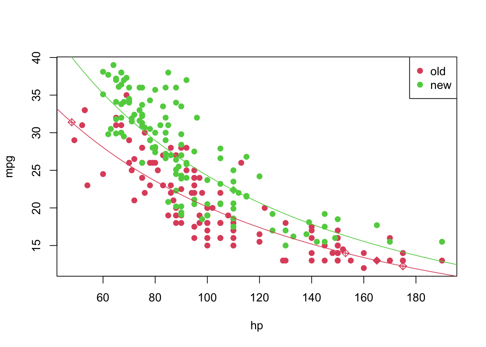